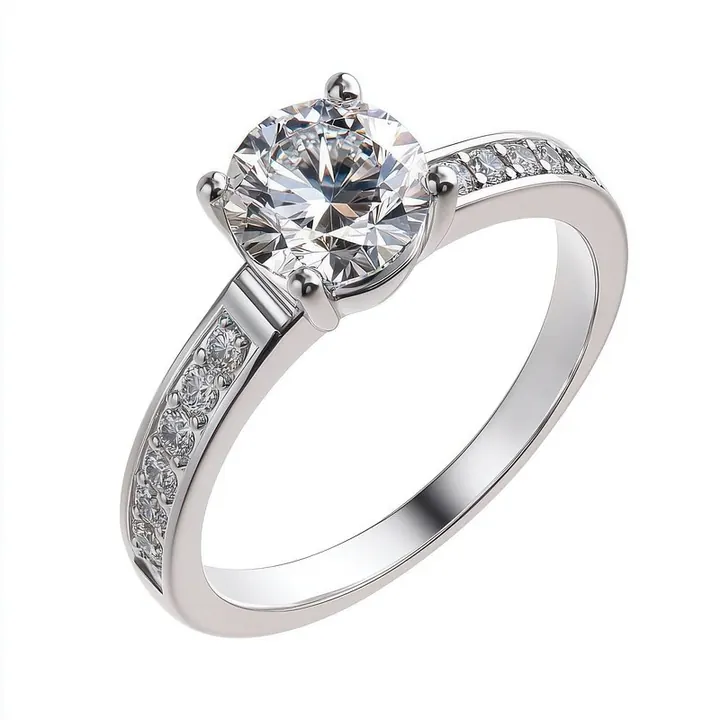

花式切工：公主方、祖母綠形與心形的性格
圓形鑽石是安全牌，花式切工是性格——同樣克拉數，形狀不同，火彩、價格與存在感天差地遠。

核心定義
花式切工（fancy cut）指圓明亮式以外的一切形狀：公主方（princess）、祖母綠形（emerald）、心形（heart）、梨形（pear）、橢圓形（oval）、欖尖形（marquise）、墊形（cushion）、雷地恩形（radiant）、阿斯切（asscher）等。它們各有光學性格與文化聯想。
圓形是「效率王」，花式切工則各有所長：公主方用較少原石損耗換來大面積亮光；祖母綠形用階梯式刻面展現「鏡廳」般的內斂光帶；心形與梨形則以輪廓與象徵取勝。選形狀，等於選性格。
特徵與分類
| 形狀 | 刻面風格 | 光學性格 | 適合 |
|---|---|---|---|
| 公主方 | 明亮式（四角尖） | 火彩接近圓形、閃亮 | 現代、幾何感 |
| 祖母綠形 | 階梯式（長八角） | 鏡廳光帶、內斂 | 古典、高級感 |
| 墊形 | 明亮式（圓角） | 柔和復古火光 | 復古、浪漫 |
| 心形 | 明亮式（對稱心） | 可愛明亮 | 象徵、禮物 |
| 梨形/欖尖 | 明亮式（水滴/梭） | 修長顯大 | 拉長手指線條 |
花式切工的鑑定差異：GIA 只對圓形鑽石給「切工五級」；花式切工不評切工等級，只看比例、對稱、拋光（Polish/Symmetry）與桌面比例——所以花式切工的品質評估，更需要行家眼光。
科學原理
明亮式刻面（公主方、墊形、梨形）的光學邏輯與圓形相同：靠冠亭角度的全內反射產生亮光與火光。階梯式刻面（祖母綠形、阿斯切）則不同——它靠平行的長階梯面反射出「鏡廳」般的帶狀光，火光較弱但氣質冷靜，特別適合高淨度鑽石展示內含物少的優勢。
花式切工的另一科學點是「長寬比」：公主方約 1.00、祖母綠形 1.30～1.50、梨形 1.45～1.75、心形 0.90～1.10。比例偏離太多，形狀就「走樣」，價格與美感都受影響。
鑑定與鑑別方法
- 看長寬比是否符合該形狀的黃金區間
- 檢查對稱：梨形/心形的軸線是否居中、翼部是否對稱
- 看「領結效應」：梨形/欖尖形的蝴蝶結暗區是否過大
- 階梯式切工選高淨度（內含物在鏡廳中更明顯）
- 明亮式花式切工注意角部崩裂風險（公主方四角最脆）
市場行情與保養建議
市場上，公主方是僅次於圓形的熱門；祖母綠形與墊形因復古風潮身價回升；心形與梨形以象徵性需求為主。花式切工的單克拉單價通常低於同品質圓形（原石利用率高、需求相對少），是性價比愛好者的選項。
但花式切工的轉手流動性普遍低於圓形——若你重視未來變現，圓形仍是最穩的選擇；若你追求個性與獨特，花式切工是「用價格換性格」的聰明交易。
常見誤區
品質看比例與工藝，不看形狀。好的花式切工可以讓光效接近甚至超越平庸的圓形。GIA 不評花式「切工等級」，不代表花式沒有品質標準。
公主方的四角極易崩裂，切磨與鑲嵌工藝要求更高；且它的光效分布與圓形不同。選公主方，要更重視邊角保護設計。
冷知識
階梯式切工誕生於祖母綠（脆性高、怕壓力），後來才被用於鑽石。「祖母綠形鑽石」是跨寶石的工藝遷徙。
同一形狀，西方叫淚滴（teardrop）、市場也叫水滴（drop）。一個形狀，兩種敘事——珠寶的浪漫往往藏在命名裡。
反直覺觀點
花式切工的檯面面積通常比圓形大（原石利用率高），同樣重量下，公主方或梨形往往「顯大」——這就是很多人驚覺圓形「不顯大」的原因。
它的鏡廳光帶低調奢華，恰恰適合展現高淨度鑽石的清澈。火光強弱沒有絕對好壞，只有合不合你的氣質。